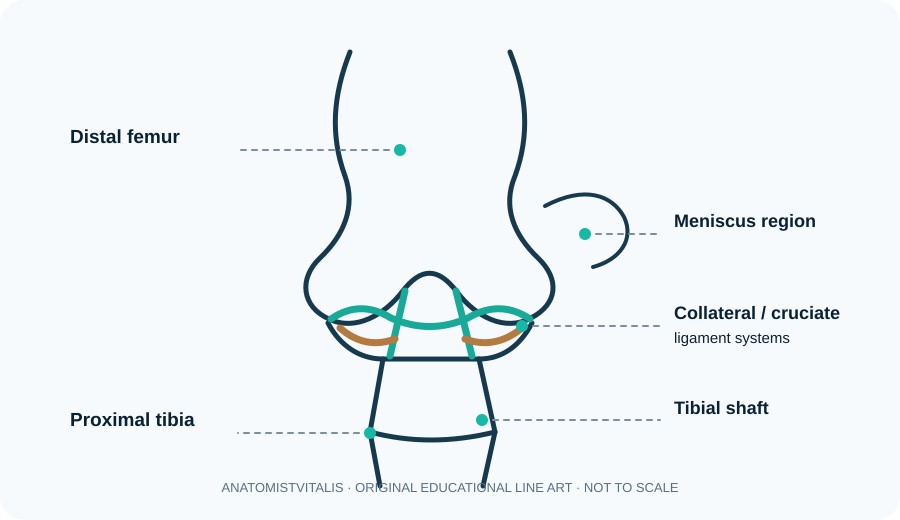

Joints: classification, structure and movement
A joint or articulation is where two or more skeletal elements meet. Structural classification includes fibrous joints, cartilaginous joints and synovial joints; functional classification describes how much movement is permitted. Synovial joints have articular cartilage, a joint cavity, a fibrous capsule lined by synovial membrane and synovial fluid. Some contain accessory structures such as discs, menisci, labra, bursae and ligaments. Joint shape influences permitted movement, but stability also depends on congruence, ligaments, muscle tone and surrounding tissues.
Learning objectives
- Distinguish fibrous, cartilaginous and synovial joints.
- Name core features of a synovial joint.
- Relate joint shape to movement and stability.
High-yield study points
- Sutures are fibrous joints; the pubic symphysis is a secondary cartilaginous joint; the shoulder is a synovial ball-and-socket joint.
- Hinge joints mainly permit flexion and extension; pivot joints permit rotation; plane joints allow gliding.
- Articular cartilage reduces friction and distributes load but has limited intrinsic repair capacity.
- Ligaments connect bone to bone; tendons connect muscle to bone.
- Bursae and tendon sheaths reduce friction at selected sites.
Clinical connection
Sprains involve ligament injury, while strains involve muscle or tendon injury. Joint swelling, instability and restricted movement need assessment in context.
Check your understanding
- How are joints structurally classified?
Reveal answer
Fibrous, cartilaginous and synovial joints.
- What feature distinguishes a synovial joint?
Reveal answer
A joint cavity containing synovial fluid, enclosed by a capsule with articular surfaces typically covered by hyaline cartilage.
- Are all cartilaginous joints freely movable?
Reveal answer
No. Synchondroses are generally immobile, while symphyses permit limited movement.
Visual orientation: synovial joint structure

Further reading
OpenStax, Anatomy and Physiology 2e — joints and appendicular skeleton. In practical study, identify articular surfaces, capsule, cartilage and stabilising ligaments on an actual specimen or suitable imaging.
Structural and functional classification of joints
Structural classification is based on the tissue connecting bones and whether a joint cavity is present. Functional classification describes the amount of movement normally permitted. These systems answer different questions and should be learned together.
- Fibrous joints: bones are connected by dense connective tissue. Sutures are nearly immobile; syndesmoses permit limited movement; gomphoses anchor teeth in alveoli.
- Cartilaginous joints: bones are united by cartilage. Synchondroses use hyaline cartilage, while symphyses use fibrocartilage and resist compression, as at intervertebral discs and the pubic symphysis.
- Synovial joints: have a joint cavity, articular cartilage, a capsule with fibrous and synovial layers, and synovial fluid. They permit a range of movements depending on shape and supporting tissues.
Shape predicts movement, but not in isolation
Hinge joints favour flexion-extension; pivot joints favour rotation; condyloid and saddle joints permit movement in two main planes; ball-and-socket joints permit movement in multiple planes; and plane joints allow gliding. Actual movement is constrained by ligaments, capsule, muscle control, joint congruity and the task being performed.
Stability and mobility
Stability is shared between bony shape, ligaments, capsule, muscles, tendons and neuromuscular control. A highly congruent joint may be stable but less mobile; a shallow joint may allow greater range and rely more on dynamic stabilisers. The shoulder and hip illustrate this contrast, though neither joint can be understood from shape alone.
Clinical application
Joint pain and reduced movement can arise from articular cartilage, synovium, capsule, ligaments, periarticular tendons, bone or surrounding nerves. Classification helps predict movement and structure, but it does not establish the cause of symptoms. In clinical reasoning, connect the examination findings to the specific tissues and movements involved.